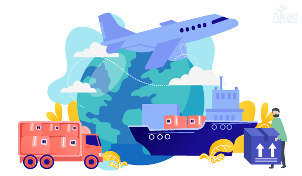

Diseño Gráfico
Con la carrera de diseño y animación digital, aprenderás todo sobre los programas más utilizados en el mercado, lo que facilitará tu inserción laboral. Los principales programas que abordarás son: Autodesk 3ds Max y After Effects. También se abordarán Photoshop, Illustrator y Premiere. La carrera tiene un perfil generalista, el plan de estudio incorpora materias sobre las diferentes etapas de la producción de una animación 3D, animación 2D y efectos especiales, entre otras. Lo que te permitirá en un futuro no solo desarrollarte como técnico sino también en puestos vinculados a la dirección de proyectos.

Contador Público
Aprendé a manejar e interpretar la contabilidad de una organización o persona, para tomar decisiones eficientes y asegurar el éxito financiero, basándote en los ejes de la carrera: Contabilidad y auditoría, derechos, impuestos y finanzas. Estarás capacitado para desempeñarte en cuatro ejes principales: Contabilidad y Auditoría, Derechos, Impuestos y Finanzas, aplicar procedimientos, técnicas y sistemas de información contable, desarrollar procesos de auditoría y su normativa, desde la planificación hasta su ejecución, tomar decisiones en la búsqueda de soluciones operativas y rentables, administrar, gestionar y dirigir áreas o equipos de trabajo especializados y desarrollar emprendimientos empresariales propios

Periodismo
Pensamos una Licenciatura en Periodismo renovada, diferente, adaptada tanto a las
transformaciones
tecnológicas como también a los cambios trascendentales que manifiesta el mundo actual,
tanto
geopolítica como social y culturalmente.
Con tu formación podrás realizar investigaciones periodísticas en diferentes campos de
interés,
crear,
planificar y dirigir contenidos mediáticos orientados a las exigencias actuales
Pensamos una Licenciatura en Periodismo renovada, diferente, adaptada tanto a las transformaciones tecnológicas como también a los cambios trascendentales que manifiesta el mundo actual, tanto geopolítica como social y culturalmente. Con tu formación podrás realizar investigaciones periodísticas en diferentes campos de interés, crear, planificar y dirigir contenidos mediáticos orientados a las exigencias actuales
Recursos Humanos
El licenciado en Recursos Humanos lidera, motiva y genera un clima laboral propicio para
escuchar,
reconocer las necesidades, los sentimientos y el potencial de la gente. Interviene y mejora
la
calidad de vida laboral dentro del ámbito organizacional. Estarás capacitado para
desarrollar el
planeamiento del área de Recursos Humanos y su inserción en el plan estratégico global de la
organización, diseñar e implementar estrategias de: selección de personal, capacitación y
desarrollo, motivación y promoción, diseño y evaluación de puestos, escalas salariales, etc,
y
planificar y llevar adelante procesos de relaciones humanas internas, como procesos de
negociación
con otros actores externos como los sindicatos
El licenciado en Recursos Humanos lidera, motiva y genera un clima laboral propicio para escuchar, reconocer las necesidades, los sentimientos y el potencial de la gente. Interviene y mejora la calidad de vida laboral dentro del ámbito organizacional. Estarás capacitado para desarrollar el planeamiento del área de Recursos Humanos y su inserción en el plan estratégico global de la organización, diseñar e implementar estrategias de: selección de personal, capacitación y desarrollo, motivación y promoción, diseño y evaluación de puestos, escalas salariales, etc, y planificar y llevar adelante procesos de relaciones humanas internas, como procesos de negociación con otros actores externos como los sindicatos

Psicología
La carrera cuenta con dos orientaciones que profundizan los fundamentos del plan general:
una
orientada a la Clínica, sus desarrollos y dispositivos, y otra orientada a las
Organizaciones y
el Mercado, puesto que resulta fundamental avanzar en la profundización sistemática y
progresiva
de los conocimientos, delimitando un alcance de formación propicio para la ulterior
inserción
profesional en diversos ámbitos. Así, el cuerpo docente será esencial a la hora de impartir
y
generar el aprendizaje, destacando siempre los valores propios del hombre y la sociedad
actual,
la escucha continua y una formación profesional permanente.
La carrera cuenta con dos orientaciones que profundizan los fundamentos del plan general: una orientada a la Clínica, sus desarrollos y dispositivos, y otra orientada a las Organizaciones y el Mercado, puesto que resulta fundamental avanzar en la profundización sistemática y progresiva de los conocimientos, delimitando un alcance de formación propicio para la ulterior inserción profesional en diversos ámbitos. Así, el cuerpo docente será esencial a la hora de impartir y generar el aprendizaje, destacando siempre los valores propios del hombre y la sociedad actual, la escucha continua y una formación profesional permanente.
Comercio Exterior
Para las organizaciones o las empresas con visión global es trascendental contar con
personas que conozcan y entiendan las necesidades del mercado internacional y que
permitan
incrementar la competitividad a gran escala, coordinando su apertura al mundo.
Al graduarte serás capaz de relacionarte con líderes de negocios de todo el mundo,
trabajando en empresas internacionales, bancos, seguros, proyectos de inversión y otras
organizaciones. Sabrás aportar una visión global a la toma de decisiones dentro de una
empresa, para incrementar su competitividad a gran escala y su apertura al mundo.

Para las organizaciones o las empresas con visión global es trascendental contar con personas que conozcan y entiendan las necesidades del mercado internacional y que permitan incrementar la competitividad a gran escala, coordinando su apertura al mundo. Al graduarte serás capaz de relacionarte con líderes de negocios de todo el mundo, trabajando en empresas internacionales, bancos, seguros, proyectos de inversión y otras organizaciones. Sabrás aportar una visión global a la toma de decisiones dentro de una empresa, para incrementar su competitividad a gran escala y su apertura al mundo.